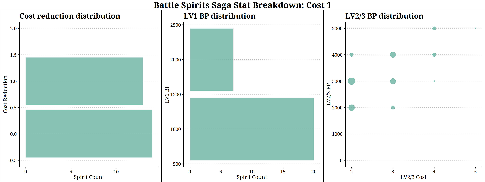
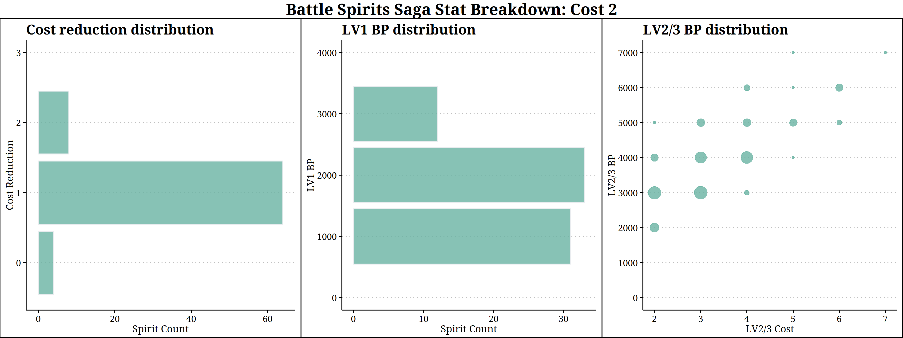
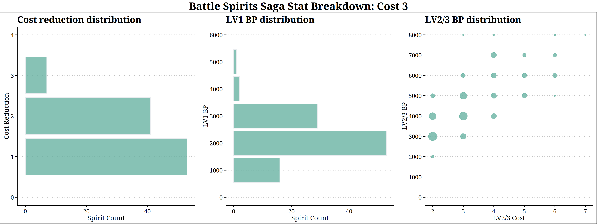
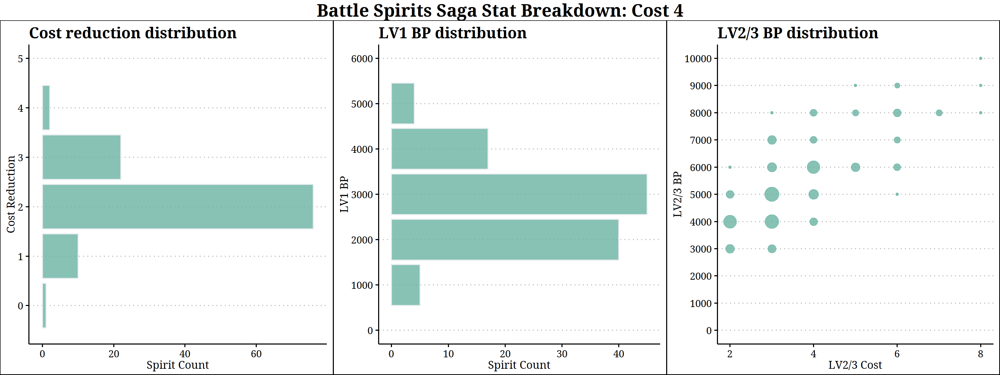
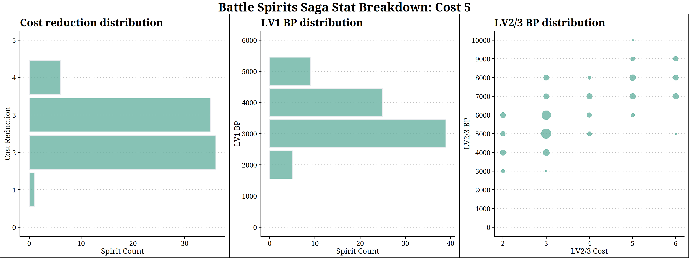
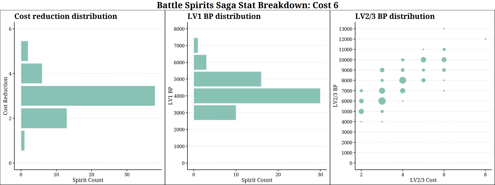
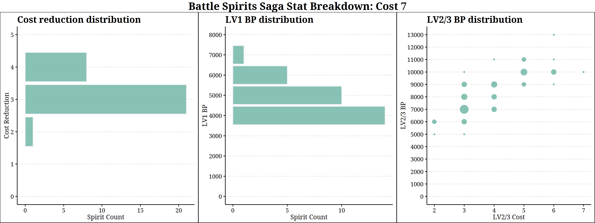
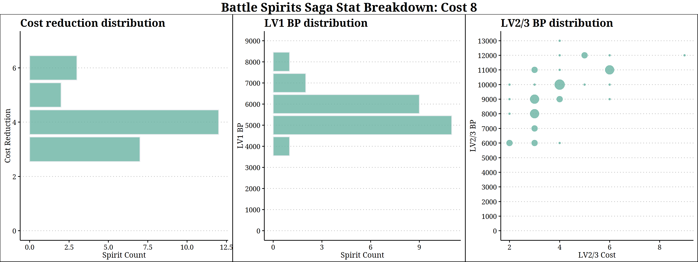
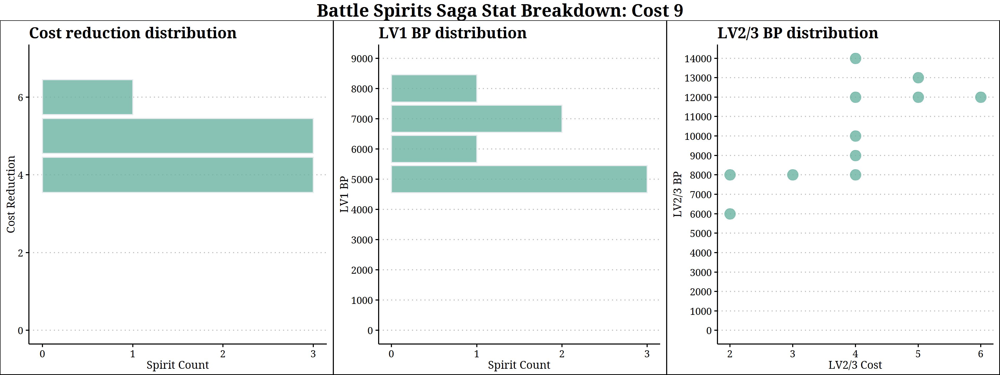

Battle Spirits Saga is a 2023 remaster/remake of the Battle Spirits card game, originally released in 2008/2009.
Introduction#
In most card games, it's easy to compare statlines - just look at the overall pool of creatures with the same cost, and see how their power/toughness compares. LV4 monsters in Yugioh, for example, have 0-2000 ATK (assuming no negative effect), and 1700+ is usually considered solid. Many mana-based games have average power/toughness values approximately in line with play cost. In Battle Spirits Saga, this gets a little trickier - their spirits have up to three levels with different stats, with higher levels requiring more "cores" (in that case, for example, lv3 requires 6 cores and gives it 6000 BP). It can be hard to figure out if 2 cores for 4000 BP or 3 cores for 5000 BP is better.
{kind=link}
I've created charts for each spirit cost showing the distribution of BP/core requirements, to help compare statlines between spirits of the same cost.
Cost 1-10 Charts - All Spirits#
These contain all spirits revealed through BSS06. All spirits so far only need 1 core for LV1, so that's presented as a bar chart. Cost reduction is similarly one-dimensional. "Frequency" is the count of spirits who have each listed cost reduction/lv1 BP stat. For levels 2/3, the scatter plot shows core/BP combinations with larger circles representing a greater number of spirits at that combination. These levels are combined into one chart - many spirits end up treating lv2 as their max, and it makes it easier to compare with the overall core:BP relationship. Spirits placing in the top-left region of those charts can be considered to have high stats.
For example, looking at the cost 1 charts, we can see that about half of these spirits have 1 cost reduction. Around 3/4ths have 1000 BP at lv1. At higher levels, the max BP is 5000 (taking 4 or 5 cores).










For a usage example, here's where one random card stands. Pretty much middle of the road for 4-cost spirits. Cost 0 not included yet as it's essentially all Elementals with the same stat profile.
{kind=link}
Notes#
- As the data pool grows, it may be interesting to compare by color and see if the stat distribution varies significantly.
- Similarly, a comparison by set/release date could, once enough sets release, show how much stat powercreep is present.
- Strength (or presence) of effects are not accounted for. Non-effect spirits should be held to a higher stat standard. Extreme cases like Dilophoza have much higher stats and a negative effect to balance it out. The reduction colors, symbol count, and so on also influence things.
- Stats obviously don't win many games on their own. This is just a way to help evaluate one facet of your spirits.
{kind=link}